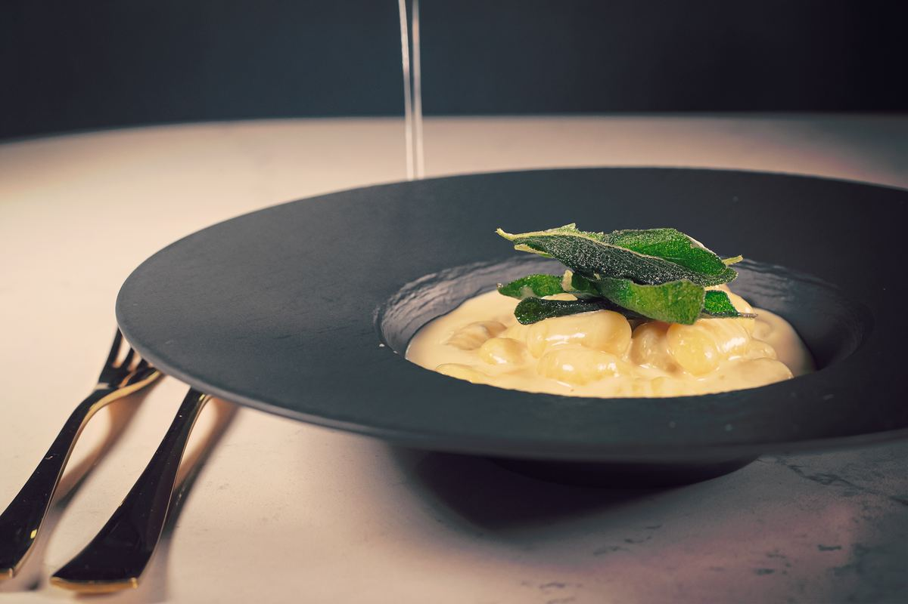
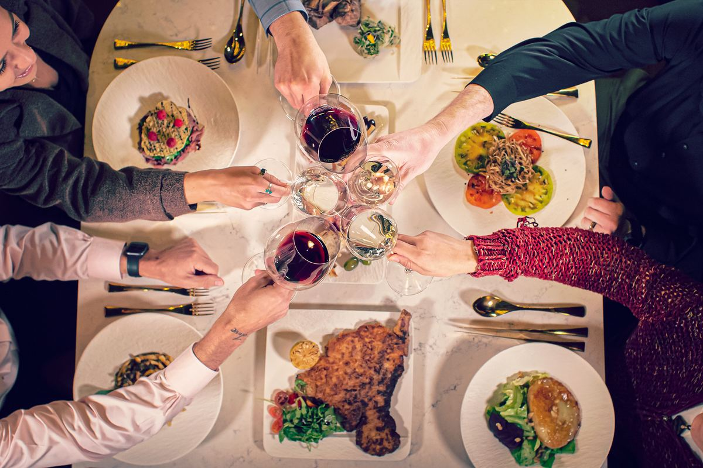
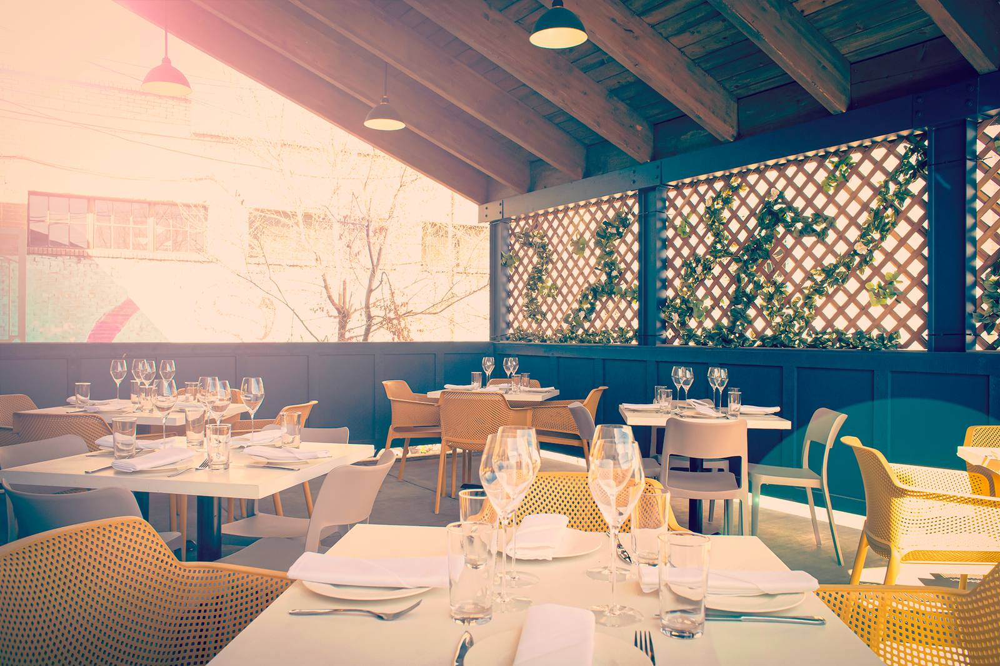

Our Story
More than a restaurant
A journey through the regions of Italy, in a room that was once a theater.
The Name
Teatro, the Italian word for theater
Teatro’s home was once a theater. When we took over the space, we chose to embrace those roots, and the name followed. From the moment you step inside, you’ll feel transported to another time and place.
The ambiance is only the start. From handmade pasta to perfectly grilled meats and seafood, every dish is made with great care and attention to detail.

“Something unexpected here in Flagstaff, Arizona, and second to none anywhere in the country.”
The Experience
Guided by people who love it
What sets Teatro apart is its staff. The team is trained to put the guest first, to talk with you, and to guide you through your meal. You’ll discover Italian dishes you may never have seen before, with something new to find on every visit.
The experience continues with the wine: 125 Italian wines, hand-selected to pair with your meal. It is an ever-evolving relationship between the restaurant and its guests, and a journey of discovery that never ends.

Private Dining & Events
Make the room your own
A culinary journey through the regions of Northern Italy, for your guests alone. Every part of the service and every dish is prepared with great care.

Main Dining
Seated 80 · Reception 100
A warm, modern room with fine stemware and luxury place settings. A private booking includes the whole venue, including the bar and the Terrazzo.
Patio
Up to 24 guests
An outdoor dining space with bistro lighting, flexible seating, semi-private screening, and exclusive access for booked events.